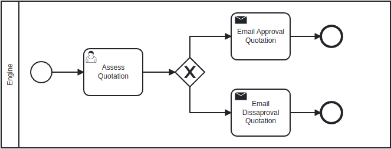
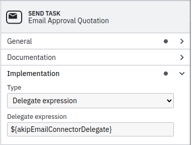
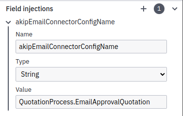
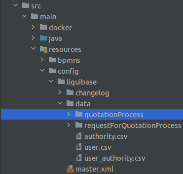
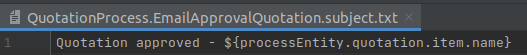
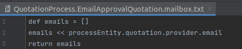
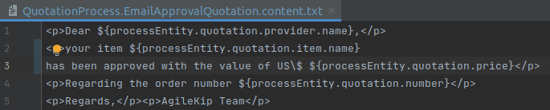
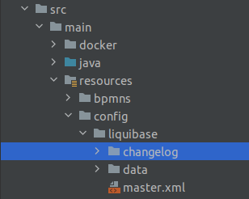
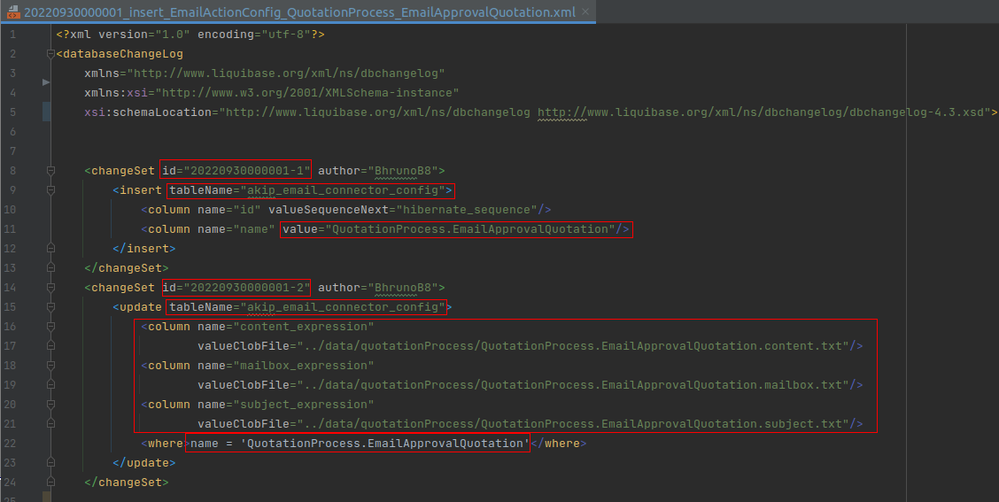
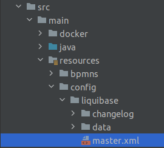

Email Connector
1. Camunda
Initially to create an Email, we need to configure our Camunda BPMN.

In this case it is common to have a task before send the Email in our case we have the Assess Quotation task a User Task, that simply approve or disapprove a quotation. If the quotation is approved than it send the Email Approval Quotation and if it is not approved it send Email Disapproval Quotation.
To simplify this tutorial we’ll only do the Email Approval Quotation. CLicking in the send task we open a tab to configure, first we click in Implementation and set te Type to Delegate Expression and put in Delegate expression ${akipEmailConnectorDelegate}, this delegate already exists as a compiled class when we generate the base project.

Still in the configuration of Email Approval Quotation we click in Field injections and click in Create a new list item (plus icon), we’ll add the Name akipEmailConnectorConfigName, Type String and then the Value that we put the name of the process dot the name of our task using CamelCase, in our case it will be QuotationProcess.EmailApprovalQuotation.

2. Project Generation
Before we pass to the coding the Email task, we need first to install the AgileKIP Generator to execute the project using the jhipster blueprint, after this we need to create the metadata of the domain, entities and their relations. To create the project step by step it’s recommended to read the tutorial here
3. Into the code
After we config the Email task in Camunda, just need to construct the body of the email. For that we’ll start by entering the folder with the name of the process through this path: src > main > resources > config > liquibase > data > quotationProcess (in our case). Inside this folder we create three types of file to construct the email: the content.txt, mailbox.txt and the subject.txt all with the name of the process dot the name of the task (example: QuotationProcess.EmailApprovalQuotation.content.txt).

First in the subject.txt we’ll fill this file with the title of the Email. Notice that inside this txt we can bring the value of some attribute using the ${}.

Now inside the mailbox.txt we define the emails address that this emails will be sent.

The last step to construct the body of the email is the content, inside the content.txt we write what we want to present for the user using <p></p> tags.

We can manipulate data in this file using SQL, doing for loops, whiles and other stuff, here is another example of a content.txt for an email (Email RFQ Summary) of a summary of items that have been quoted.
String requisicaoHql = """ SELECT q FROM Quotation q WHERE q.requestForQuotation.id = ${processEntity.requestForQuotation.id} """
def listQuotations = hqlApi.findList(requisicaoHql)
def tableQuotations = """
<p>Dear ${processEntity.requestForQuotation.user.login}</p>
<p>Below is the summary containing all quotations for the item ${processEntity.requestForQuotation.item.name}</p>
</br>
"""
tableQuotations += """<table border="1" style="width: 100%">
<tr>
<td>Name</td>
<td>Description</td>
<td>Price</td>
</tr>
"""
listQuotations.findAll{ quotation -> quotation.statusQuotation.toString() != 'DISAPPROVED' }.each{ quotation ->
tableQuotations += """
<tr>
<td>
<p>${quotation.provider.name}</p>
</td>
<td>
<p>${quotation.requestForQuotation.item.description}</p>
</td>
<td>
<p>US\$ ${quotation.price}</p>
</td>
</tr>
"""
}
tableQuotations +="</table>"
"""
${tableQuotations}
<p>Regards, AgileKip Team</p>
"""
Finishing the body of the email, we must create a ChangeLog to persist the email, for this we’ll go to the changelog file: src > main > resources > config > liquibase > changelog. We need to create a file containing this format: year followed by month and followed by the actual day, together with the order of creation in that day (example: 20221021000001_insert_EmailActionConfig_NameOfProcess_NomeOfSendTask.xml).


Following the red marks, we must create a changeSet to insert the email. Attention to the moment you identify the changeSet id, you need to write like the name of the changelog, but just with the numbers part, followed by a dash and the respective value of the changelog using ascending order. We need to pay attention to the tableName that should be akip_email_connector_config.
In the values of the columns we must put the name of the process (QuotationProcess) dot the name of the Send Task (EmailApprovalQuotation). After that we create a new changeSet with the sequence id of the previous one, but this time this changeSet will do a update, passing again the same tableName, but with the content of the column updated. The three files that we created before (content, mailbox and subject) in each name we must put with an underline and then “expression” like content_expression, followed by the valueClobFile that we pass the path to the respective file.
After completing the changeLog the last thing we need to do is to register this changelog in the master.xml. src > main > resources > config > liquibase

To register the changelog just put a line like this one in the file
<include file="config/liquibase/changelog/20220930000001_insert_EmailActionConfig_QuotationProcess_EmailApprovalQuotation.xml" relativeToChangelogFile="false"/>